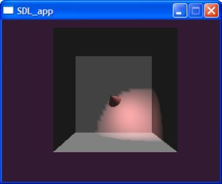

lispbuilder-openrm
Overview
The OpenRM Scene Graph implements a scene graph API using OpenGL for
hardware accelerated rendering. OpenRM is intended to be used to construct high performance, portable graphics and
scientific visualization applications on Unix/Linux/Windows platforms.
lispbuilder-openrm provides the bindings and utility functions necessary to integrate OpenRM with Common Lisp.
The lispbuilder-openrm relies on the OpenGL libraries being installed on the host OS. Although lispbuilder-openrm
itself does not require lispbuilder-sdl,
several of the OpenRM examples require SDL to manage the window, key handling and creation of the OpenGL context.
OpenRM itself provides support for this, but this has not yet been tested in these bindings.
The lispbuilder-openrm package is a part of the
Common Lisp Application Builder project which is in turn a part of the
umbrella Common Lisp Gardeners project.
The purpose of this document is to describe a step-by-step process by which the user may install, configure and
begin using the lispbuilder-openrm package to create applications using one of the
supported Lisp implementations.
The list of credits is contained in CONTRIBUTORS. A copy of the license is contained in
COPYING.
Supported Implementations
The following table describes the status of the Lisp implementations that have been tested with lispbuilder-openrm:
| Lisp Implementation |
lispbuilder-openrm Status |
Comments |
|
Win32 |
Linux |
MacOS |
|
| CLISP v2.38 |
Working |
Unknown |
Unknown |
|
| Lispworks v2.4.6 Personal |
Working |
Unknown |
Unknown |
As of [03/30/06], use the 'CFFI-060214' tarball for Windows as more recent versions do not work. |
| Allegro Trial Edition 7.0 |
Unknown |
Unknown |
Unknown |
|
| OpenMCL |
NA |
NA |
Unknown |
|
| SBCL |
When, oh when? |
Working |
Unknown |
|
| CMUCL |
When already? |
Unknown |
NA |
Justin WIP Debian (sarge)
|
Prerequisites
The packages
asdf.lisp,
CFFI and
lispbuilder-sdl
must be installed prior to the installation of lispbuilder-openrm. The installation procedures for these pacakges are
described in the lispbuilder-sdl documentation.
In addition the the lisp packages described above, OpenRM for Windows requires the
PThreads Win32 libraries, as well as the Windows specific
msvcr70.dll and msvcrtd.dll libraries. All these binaries are included in the
lispbuilder-openrm-binaries
package on sourceforge. The installation instructions for this package are described below. The Linux installation does not require these additional binaries.
Installation on Win32 Platforms
Installation of lispbuilder-openrm
This section describes the installation of the lispbuilder-openrm package.
Installation of the OpenRM binaries
This section describes the installation of the OpenRM binaries for Windows.
- Install the OpenRM libraries by performing the following:
- Download the lispbuilder-openrm-binaries package from sourceforge and unpack it into the asdf directory, e.g.
c:\programme\clisp-2.38\asdf\lispbuilder-openrm\lispbuilder-openrm-binaries.asd
c:\programme\clisp-2.38\asdf\lispbuilder-openrm\bin\librm.dll
c:\programme\clisp-2.38\asdf\lispbuilder-openrm\bin\librmaux.dll
c:\programme\clisp-2.38\asdf\lispbuilder-openrm\bin\librmi.dll
c:\programme\clisp-2.38\asdf\lispbuilder-openrm\bin\librmv.dll
c:\programme\clisp-2.38\asdf\lispbuilder-openrm\bin\msvcr70.dll
c:\programme\clisp-2.38\asdf\lispbuilder-openrm\bin\msvcrtd.dll
c:\programme\clisp-2.38\asdf\lispbuilder-openrm\bin\pthreadGC.dll
c:\programme\clisp-2.38\asdf\lispbuilder-openrm\bin\pthreadGCE.dll
c:\programme\clisp-2.38\asdf\lispbuilder-openrm\bin\pthreadVC.dll
c:\programme\clisp-2.38\asdf\lispbuilder-openrm\bin\pthreadVCE.dll
c:\programme\clisp-2.38\asdf\lispbuilder-openrm\bin\pthreadVSE.dll
Installation on Linux Platforms
Installation of lispbuilder-openrm
This section describes the installation of the lispbuilder-openrm package for Linux users. Download the latest version
of the lispbuilder-openrm
package from sourceforge, and:
- ASDF-Install: The package is ASDF-Install'able, so install the package using ASDF-install:
(asdf-install:install "lispbuilder-openrm_0.1.tgz"), or
- Manual installation: Extract the package to the correct asdf systems directory.
Installation of the OpenRM binaries
This section describes the installation of the OpenRM binaries for Linux.
Configuration on Win32 Platforms
ASDF Configuration
Add the following to the ASDF *central-registry*:
(pushnew "/programme/clisp-2.38/asdf/lispbuilder-openrm_0.1/" asdf:*central-registry*)
Set "lispbuilder-openrm_0.1/" to the version number of the lispbuilder-openrm package, e.g. "lispbuilder-openrm_{version_number}/".
Fire it Up
Now start CLISP and enter the following at the prompt:
(load "c:/programme/clisp-2.38/asdf/asdf.lisp")
(asdf:operate 'asdf:load-op :lispbuilder-openrm-examples)
ASDF will take care of loading the CFFI, :lispbuilder-sdl and :lispbuilder-openrm dependencies.
The OpenRM binaries will also be loaded into the Lisp image at this time.
Great. If you received any errors during this processes then go back and verify that the pathnames entered into the
*central-registry* match the directories where the packages were installed. Also verify that the OpenRM binaries are
located somewhere in the search path, as described above.
Running the included OpenRM examples
To verify that lispbuilder-openrm is installed correctly, run the example by entering:
(rm-examples:jballs)
You should see a window as show below. Click-drag the mouse using the left, right or middle mouse buttons to
arc, dolly and translate the camera viewpoint.
")
The 'A' key will display bounding boxes around each object in the scene:
")
(rm-examples:spotlight)
Click-drag the mouse while depressing the left mouse button to rotate the spotlight.
